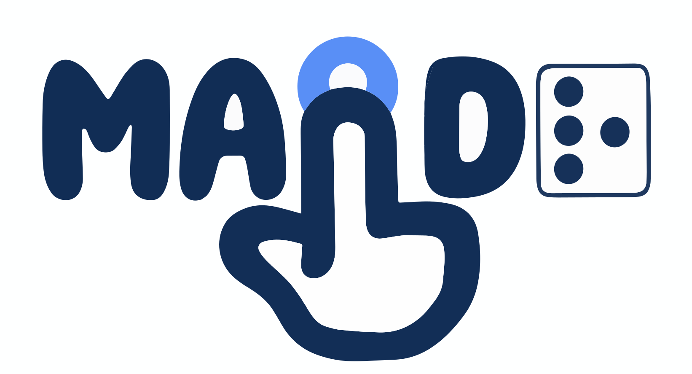

Make a plotly, highcharter or echarts4r htmlwidget accessible
Source:R/htmlwidget_bridge.R
maidr_htmlwidget.RdAttaches MAIDR to an interactive chart drawn by another R package, so a screen reader user can explore it with the keyboard, hear it as sonification, and read it as text and braille. The chart is read by the MAIDR JavaScript adapter for the library that draws it, once it has been drawn in the browser; nothing about it is recomputed in R.
Arguments
- widget
An htmlwidget created by plotly, highcharter or echarts4r.
- use_cdn
Logical. Where the MAIDR scripts are loaded from:
FALSE(default): the copy bundled with this package, which works offline and makes no network request.TRUE: the jsDelivr CDN, which loads the latest published MAIDR unlessmaidr.cdn_versionpins one; see?"maidr-options".
Value
The widget, with MAIDR attached. Print it, return it from a Shiny render function, or save it as you would the original.
Details
Supported widgets:
plotly:
plotly::plot_ly()andplotly::ggplotly(). MAIDR's core detects a Plotly chart on the page by itself, so no adapter is added.highcharter:
highcharter::highchart(),highcharter::hchart()and the stock, map and gantt variants.echarts4r:
echarts4r::e_charts(). The chart is switched to ECharts' SVG renderer, since MAIDR highlights the mark being read by finding it among the drawn SVG elements, and the default canvas renderer draws none.
Which chart types each library supports is decided by its MAIDR adapter; see https://maidr.ai/ for the lists. A chart the adapter cannot read is left as it was drawn, with a warning in the browser console.
The widget keeps working everywhere an htmlwidget does: the RStudio
viewer, htmlwidgets::saveWidget(), R Markdown and Quarto documents,
and Shiny (plotly::renderPlotly(),
highcharter::renderHighchart(), echarts4r::renderEcharts4r()),
where the chart is read again each time the server re-renders it.
Applying it twice returns the widget unchanged.